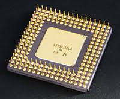

- CPU
- A CPU - Central Processing Unit - A számitógépnek az agya.
-

- SSD
- Az SSD félvezetős memóriát használó adattároló eszköz.
-
- Router
- Az útválasztó, forgalomirányító vagy angol kifejezéssel: router a számítógép-hálózatokban egy útválasztást végző eszköz.
-
-
Monitor
- A monitor a számítógép megjelenítő perifériája.
-